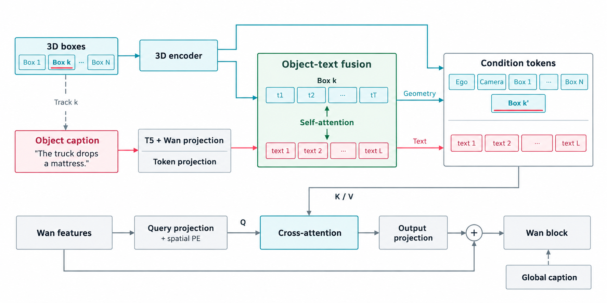
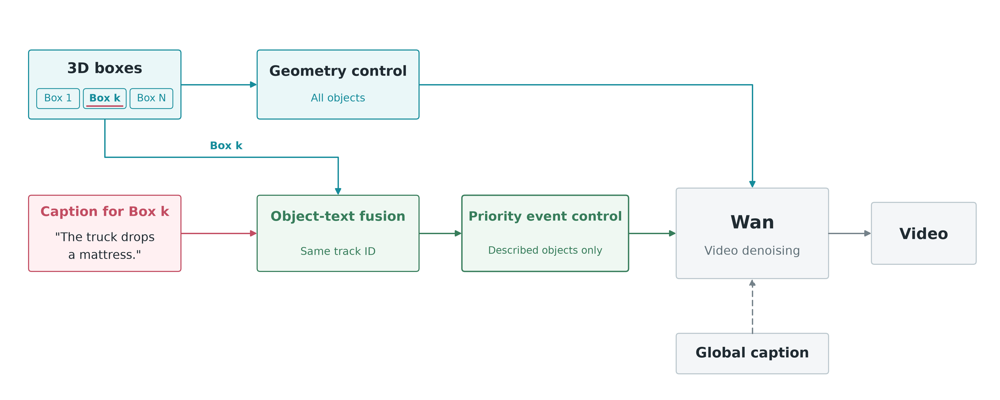

N01
A silver sedan turns left across the oncoming lanes in the middle of the road.
先在对象内部融合，再把融合结果交给视频特征统一读取。

沿用上述对象内融合，主要改变视频特征读取条件的方式，而不是再增加一套独立 ControlNet。

A silver sedan turns left across the oncoming lanes in the middle of the road.
A pedestrian in a black shirt and shorts runs across the crosswalk from left to right in front of the ego vehicle.
A blonde woman in a blue top and denim shorts stands by the open rear passenger door of a black SUV, interacting with the vehicle.
A cyclist rides a bicycle from the right side of the road, moving leftward across the ego vehicle's path near the curb.
A white SUV pulls out from the left side and merges into the lane ahead of the ego vehicle.
A pedestrian wearing a white shirt and a face mask walks across the covered driveway from right to left while carrying a flat cardboard box.
The dark pickup ahead loses a long wooden board from its rear; the board tips down, lands flat on the road, and is left behind as the pickup continues forward.
The car ahead in the middle lane drops a long wooden board, which lands flat on the road behind it as the car continues forward.
The dark pickup truck drops its rear-mounted spare tire, which tumbles off the tailgate and rolls onto the pavement behind the vehicle.
The black pickup rounds a bend as a large cardboard package tips backward from its rear, falls onto the road, and lands flat behind it.
The dark pickup truck drops a cardboard box from its open bed, which falls onto the road behind it and slides backward.
The dark pickup drives ahead as long wooden boards tip down from its rear and come to rest flat across the lane behind it.
以下对比固定几何条件与随机种子，仅改变文本条件，用于检查事件由全局描述还是逐框描述驱动。
全局文本仅描述背景。左：床垫掉落；中：梯子掉落；右：关闭逐框描述。
全局文本仍包含床垫掉落事件。左：开启逐框描述；右：关闭逐框描述。
逐框描述始终指定床垫掉落。左：完整全局描述；右：全局仅描述背景。